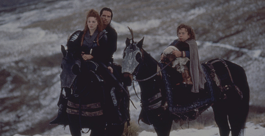

My name is Yulia Arbuzova and I am a Visual Communication Student at Eastern Washington University. I am passionate about solving visual problems through design, and creating clean and eyecatching designs.
Things I Like
Eternal Sunshine of the Spotless Mind
When their relationship turns sour, a couple undergoes a procedure to have each other erased from their memories. But it is only through the process of loss that they discover what they had to begin with.

Willow
Journey to the far corners of your imagination, to a land of myth and magic, where dream and reality live side by side. It is a world where a young man named Willow lives out an adventure that explodes beyond the boundaries of his own hopes and fears.
Seven Years in Tibet
True story of Heinrich Harrer, an Austrian mountain climber who became friends with the Dalai Lama at the time of China's takeover of Tibet.